Oqsil tuzilishini yuzlab marta kamroq ma'lumot bilan aniqlash

Rasmning to'liq tavsifi
1-rasm: Fold’EM atom tuzilmalarini to‘g‘ridan-to‘g‘ri siyrak krio-EM zarrachalari tasvirlaridan chiqaradi. (A) Fold’EM strukturaviy xulosani poza va sinfni aniqlashtirish bilan navbatma-navbat bajaradi. (B) Zarrachalar dalillari oraliq Pairformer H holatlariga qayta tarqaladi va AlphaFold3 diffuziyasidan oldin qolgan Pairformer bloklari orqali eksperimental yangilanishlarni filtrlaydi. (C) Integrin–BIIG2 Fab kompleksi (PDB 9B9J) uchun AlphaFold3 alohida komponentlarni bashorat qiladi, lekin Fabni noto‘g‘ri bog‘lanish joyiga joylashtiradi. (D) Ab initio Fold’EM bog‘langan kompleks va epitopni atigi 1000 ta zarrachadan — depozit qilingan rekonstruksiya uchun ishlatilganlarning 0,26% — 2,49 Å RMSD, 0,956 TM-ball va 3,52 Å FSC ruxsati bilan tiklaydi (depozit qilingan xarita: 2,6 Å).
An'anaviy krioelektron mikroskopiya sifatli 3D xarita yaratish uchun minglab molekula tasvirlarini talab qiladi. Yangi Fold'EM usuli mikroskopiya ma'lumotlarini oqsil tuzilishini bashorat qiluvchi modellar bilan to'g'ridan-to'g'ri bog'laydi. Bu yondashuv odatdagidan ancha kam ma'lumot bilan molekulyar tuzilishni aniqlashga imkon beradi. Texnologiya ayniqsa oqsillarning kam uchraydigan va beqaror holatlarini o'rganishda juda samarali.
Asosiysi
- Fold'EM krioelektron mikroskopiyada 3D zichlikni rekonstruksiya qilish bosqichini olib tashlaydi.
- Usul shovqinli tasvirlarni talqin qilish uchun AlphaFold3 modellaridan foydalanadi.
- Strukturani aniqlash uchun odatdagidan 20–1000 barobar kamroq zarracha yetarli.
Batafsil
An'anaviy krioelektron mikroskopiya (cryo-EM) jarayoni minglab shovqinli tasvirlardan elektrostatik potensial (ESP) xaritasini rekonstruksiya qilishni va unga atom modelini moslashtirishni nazarda tutadi. Fold'EM usuli oraliq zichlikni rekonstruksiya qilish bosqichini chetlab o'tib, AlphaFold3 kabi generativ modellardan olingan strukturaviy bilimlarni to'g'ridan-to'g'ri zarrachalar tasvirini qayta ishlash jarayoniga integratsiya qiladi. Mualliflar AlphaFold3 tarkibidagi Pairformer blokini qismlarga ajratib, oraliq H holatini optimallashtirish orqali eksperimental ma'lumotlarni neyron tarmoq qatlamlaridan o'tkazishga muvaffaq bo'lishdi.
Tadqiqotchilar ushbu usulni sintetik va eksperimental ma'lumotlar to'plamlarida sinab ko'rishdi. Zarrachalarning yo'nalishi ma'lum bo'lganda, algoritmi standart ma'lumotlarning atigi 0,1% qismi bilan yetarli aniqlikka erishadi. Zarrachalarning yo'nalishi va konformatsiyasi noma'lum bo'lgan ab initio rejimida esa, usul klassik rekonstruksiya uchun zarur bo'lgan zarrachalarning atigi 3–5% qismidan foydalanib, aniq natijalar beradi. Bu heterogen namunalardagi turli konformatsion holatlarni alohida xaritalar qurmasdan ajratib olish imkonini beradi.
Cheklovlar
Ish preprint shaklida taqdim etilgan va turli biologik namunalar bilan mustaqil tekshiruvni talab qiladi.
Maqolaning batafsil tahlili
Annotatsiya
Krio-elektron mikroskopiya (cryo-EM) biomolekulalar tuzilishini aniqlashda keng qo‘llaniladigan usulga aylandi. An'anaviy hisoblash jarayoni ko‘plab zarracha tasvirlarini birlashtirib, elektrostatik potensial (ESP) xaritasini qayta tiklaydi va keyin unga atom modelini moslashtiradi. Bu jarayon yuqori namunaviy murakkablikka ega bo‘lib, ko‘p sonli zarracha tasvirlarini talab qiladi, bu esa ayniqsa strukturaviy jihatdan geterogen namunalar uchun tuzilmani aniqlashni qimmat va past samarali qiladi.
Izoh
Krio-elektron mikroskopiya (cryo-EM) — muzlatilgan biologik namunalarni elektron nurlar yordamida atom darajasida tasvirlash usuli.
Mualliflar Fold’EM tizimini taqdim etadilar. Bu usul oqsil tuzilishini bashorat qiluvchi generativ modellardan olingan ma’lumotlarni to‘g‘ridan-to‘g‘ri cryo-EM zarracha tasvirlari bilan birlashtiradi. Fold’EM oraliq zichlik xaritasini qayta tiklash va unga qarshi model qurish bosqichlarini chetlab o‘tib, oz sonli zarracha tasvirlaridan atom modellarini aniqlash imkonini beradi.
Muhim
Fold’EM zichlik xaritasini qayta tiklash bosqichini o‘tkazib yuborib, kam sonli tasvirlar asosida aniq atom tuzilmalarini tiklaydi.
Sintetik benchmarklar va eksperimental cryo-EM ma’lumotlarida Fold’EM ham ma’lum zarracha yo‘nalishlarida, ham yo‘nalishlar tuzilma bilan birgalikda aniqlanadigan ab initio rejimida aniq atom tuzilmalarini tiklaydi. Geterogen ma’lumotlar to‘plamida Fold’EM har bir holat uchun alohida xarita qurmasdan, aralash populyatsiyalardan turli konformatsion holatlarni ajratib ko‘rsatadi. Bu natijalar kam namunali rejimda tuzilmani aniqlash va kam uchraydigan konformatsion holatlarni bevosita zarrachalardan tavsiflash uchun yangi yo‘llarni ochadi.
Ehtiyot bo'ling
Usulning samaradorligi turli xil biologik tizimlarda kengroq tekshirilishi kerak.
Kirish
Yagona zarracha krioelektron mikroskopiyasi: imkoniyatlar va cheklovlar
Yagona zarracha krioelektron mikroskopiyasi (cryo-EM) kristallanishsiz yirik makromolekulyar majmualarning yuqori aniqlikdagi tuzilishini aniqlash imkonini berib, strukturaviy biologiyani tubdan o'zgartirdi. Alohida molekulalarni turli konformatsiyalarda tasvirlash qobiliyati biologik funksiyalarni boshqaruvchi strukturaviy o'zgarishlarni tushunishga yo'l ochadi. Biroq, birlamchi o'lchovlar juda shovqinli: radiatsion shikastlanish har bir zarrachaga qo'llaniladigan elektron dozasini cheklaydi, bu esa alohida tasvirlarni to'g'ridan-to'g'ri talqin qilish uchun yaroqsiz qiladi. Elektrostatik potensial (ESP) xaritasini olish uchun ko'p sonli kuzatuvlarni tekislash va birlashtirish talab etiladi, shundan so'ng atom modelini qurish bosqichi keladi, bu esa mahalliy aniqlik past bo'lganda qiyin bo'lib qoladi.
Muhim
Cryo-EM usuli o'rtacha qiymatlarni hisoblash uchun juda katta ma'lumotlar to'plamini talab qiladi, bu esa kam uchraydigan yoki beqaror oqsil konformatsiyalarini o'rganishni cheklaydi.
Heterogenlik muammosi va ma'lumotlar tanqisligi
Kogerent o'rtacha qiymatlarni olish zarurati fazoviy aniqlik va biologik to'liqlik o'rtasida ziddiyatni keltirib chiqaradi. Turli konformatsiyalardagi zarrachalarni birlashtirish strukturaviy xususiyatlarni xiralashtiradi, ularni bir jinsli guruhlarga ajratish esa har bir holat uchun kuzatuvlar sonini kamaytiradi. Kam uchraydigan va o'tkinchi holatlarni qayta tiklash qiyin, chunki ular ko'proq uchraydigan konformatsiyalar bilan aralashib ketishi yoki tanlash jarayonida chiqarib tashlanishi mumkin. Mavjud heterogenlikni modellashtirish usullari konformatsion o'zgaruvchanlikni aniqlashga imkon beradi, ammo ular zarrachalarni dastlabki tanlash va tekislash sifatiga bog'liq. Shunday qilib, katta miqdordagi zarrachalarga bo'lgan fundamental ehtiyoj hal qilinmaganicha qolmoqda.
Izoh
Cryo-EM rekonstruksiyasi — bu minglab shovqinli 2D-proyeksiyalarni 3D-modelga aylantirish jarayoni bo'lib, «o'rtacha qiymat» shovqinni bostirishga yordam beradi, lekin zarrachalarning yuqori bir jinsliligini talab qiladi.
Strukturaviy aprior bilimlarni integratsiyalash
An'anaviy rekonstruksiya usullari oqsillar tuzilishi haqidagi umumiy bilimlardan kam foydalanadi. RELION'dagi Blush kabi neyron tarmoqlar yoki AlphaFold kabi bashorat modellari strukturaviy bilimlarni kiritish signal kuchsiz bo'lganda rekonstruksiya sifatini yaxshilashini ko'rsatadi. Biroq, zamonaviy yondashuvlar bu bilimlarni rekonstruksiyadan keyin qo'llaydi, bu esa katta miqdordagi zarrachalarga bog'liqlikni saqlab qoladi. Ushbu ishda biz quyidagi savolni o'rtaga tashlaymiz: strukturaviy aprior bilimlarni to'g'ridan-to'g'ri zarracha darajasida kiritib, oraliq yuqori aniqlikdagi rekonstruksiyasiz siyrak ma'lumotlardan atom darajasida xulosa chiqarish mumkinmi?
Ehtiyot bo'ling
Taklif etilayotgan yondashuv zarrachalar soni bo'yicha cheklovlarni yengishga qaratilgan, ammo usulning samaradorligi signal-shovqin nisbati juda past bo'lgan real eksperimental ma'lumotlarda tekshirilishi kerak.
Xulosa
Biz Fold’EM tizimini taqdim etdik — bu kriyo-EM zarrachalar tasvirlaridan atom tuzilmalarini bevosita aniqlash uchun mo‘ljallangan tizim. U zichlikni rekonstruksiya qilish va model qurish bosqichlarini chetlab o‘tib, AlphaFold3 ishini zarrachalar darajasidagi dalillar bilan boshqaradi. Biz zichlikni moslashtirish faqat eksperimental metrikalar ostida zarrachalar ehtimolligini takrorlashini va noaniq pozitsiya yoki sinf holatida konsensus zichligi yetarli statistika bo‘lmasligini ko‘rsatdik. Pairformer’ning yakuniy emas, balki oraliq holatlarini optimallashtirish boshqaruvni kuchaytiruvchi geometriyani shakllantiradi. Fold’EM an’anaviy rekonstruksiya usullariga nisbatan 1% dan kamroq zarrachalar bilan aniq tuzilmalarni tiklaydi (ab initio uchun 3%, geterogen namunalar uchun 5%). Bu usul Integrin α5β1–BIIG2 bog‘lanish joyi yoki UvrA’dagi buzilgan DNK kabi odatiy bashoratlarda ko‘rinmaydigan detallarni tiklashga imkon beradi. Zarrachalar fazosidagi konformatsion tashkilot AlphaFold tasvirida aks etadi, bu esa uzluksiz harakatlarni bir nechta tayanch holatlar orqali ifodalash imkonini beradi.
Muhim
Fold’EM AlphaFold3’ning oldindan mavjud bilimlari va eksperimental ma’lumotlarni birlashtirib, an’anaviy usullarga qaraganda 20–100 barobar kamroq zarrachalar bilan tuzilmani aniqlashga imkon beradi.
Cheklovlar: Fold’EM hali kriyo-EM jarayonini to‘liq almashtira olmaydi: kiruvchi ma’lumotlar CTF parametrlari ma’lum bo‘lgan saralangan zarrachalardir, ab initio xulosa esa boshlang‘ich pozitsiyalarning aniqligiga tayanadi. Glikanlar, ligandlar yoki moslashuvchan hududlar kabi modelda yo‘q komponentlar tushuntirib bo‘lmaydigan signal sifatida qabul qilinadi. Kelgusida tozalanmagan zarrachalar bilan ishlash va lokal detallarni aniqlashtirish ustida ishlanadi.
AI foydalanish bayonoti
Qo‘lyozmani tayyorlashda ChatGPT va Claude kabi generativ AI vositalaridan tilni tahrirlash, tuzilmani yaxshilash, matematik hisob-kitoblarni tekshirish va kod yozishda foydalanildi. Barcha ilmiy xulosalar va natijalar mualliflar tomonidan tekshirilgan va ular maqola mazmuni uchun to‘liq javobgardirlar.
Jadval S3. Eksperimental krio-EM ma'lumotlar to'plamlari uchun Furye qobig'i korrelyatsiyasi (FSC) = 0.143 (↓, Å) bo'yicha aniqlik
| Usul | 1/500 | 1/250 | 1/100 | 1/50 |
|---|---|---|---|---|
| Fold’EM | 3.73 | 3.35 | 3.50 | 3.46 |
| cryoDRGN | 2.85 | 2.73 | 2.73 | 2.75 |
| RELION | 6.63 | 6.63 | 7.06 | 6.13 |
| AlphaFold3 | 3.02 | 3.95 | 3.09 | 3.36 |
| PDB | 3.20 | 3.09 | 3.26 | 3.45 |
Fold’EM, AlphaFold3 va PDB tuzilmalari uchun FSC phenix.model_map yordamida hisoblanadi. Asl ma'lumotlar to'plamining turli ulushlaridagi (ma'lum pozitsiyalarga ega 500 ta zarracha) barcha bazaviy ko'rsatkichlar depozit qilingan EMD xaritasiga nisbatan baholanadi. Qalin shrift bilan eng yaxshi natijalar belgilangan (PDB bundan mustasno).
Jadval 1. Turli suyultirish koeffitsientlarida sifatni baholash natijalari
| Parametr | 1/1000 | 1/500 | 1/250 | 1/100 | 1/50 | AlphaFold3 |
|---|---|---|---|---|---|---|
| Qiymat 1 | 1.96 | 1.97 | 1.88 | 1.92 | 1.88 | 21.90 |
| Qiymat 2 | 1.90 | 1.77 | 1.71 | 1.74 | 1.71 | 3.87 |
| Qiymat 3 | 4.340 | 4.989 | 4.597 | 5.349 | 4.174 | 33.16 |
| Qiymat 4 | 2.20 | 1.99 | 2.48 | 2.02 | 2.09 | 5.96 |
| Qiymat 5 | 1.87 | 1.39 | 1.23 | 1.35 | 1.47 | 2.01 |
| Qiymat 6 | 0.969 | 0.970 | 0.972 | 0.971 | 0.972 | 0.776 |
| Qiymat 7 | 0.972 | 0.979 | 0.981 | 0.980 | 0.981 | 0.916 |
| Qiymat 8 | 0.900 | 0.897 | 0.885 | 0.884 | 0.909 | 0.397 |
| Qiymat 9 | 0.877 | 0.893 | 0.880 | 0.893 | 0.885 | 0.734 |
| Qiymat 10 | 0.899 | 0.902 | 0.904 | 0.903 | 0.897 | 0.886 |
Jadval 2. Cα RMSD va TM-score metrikalarini taqqoslash
| Metrika | Qiymat 1 | Qiymat 2 | Qiymat 3 | Qiymat 4 | AlphaFold3 |
|---|---|---|---|---|---|
| Cα RMSD (↓, Å) | |||||
| Qator 1 | 1.05 | 1.01 | 2.78 | 1.45 | 8.96 |
| Qator 2 | 1.681 | 1.907 | 1.769 | 2.116 | 11.22 |
| Qator 3 | 0.88 | 0.88 | 1.34 | 1.37 | 7.780 |
| Qator 4 | 1.362 | 1.350 | 1.798 | 1.512 | 26.670 |
| Qator 5 | 0.81 | 1.12 | 1.44 | 1.41 | - |
| Qator 6 | 1.248 | 1.227 | 1.503 | 1.479 | - |
| Qator 7 | 0.84 | 0.86 | 1.33 | 1.44 | - |
| Qator 8 | 1.132 | 1.228 | 1.686 | 1.711 | - |
| TM-score (↑) | |||||
| Qator 1 | 0.964 | 0.965 | 0.939 | 0.983 | 0.699 |
| Qator 2 | 0.9832 | 0.9785 | 0.9810 | 0.9731 | 0.661 |
| Qator 3 | 0.967 | 0.967 | 0.987 | 0.984 | 0.7981 |
| Qator 4 | 0.9887 | 0.9890 | 0.9807 | 0.9861 | 0.4772 |
| Qator 5 | 0.968 | 0.962 | 0.985 | 0.984 | - |
| Qator 6 | 0.9906 | 0.9908 | 0.9862 | 0.9866 | - |
| Qator 7 | 0.967 | 0.967 | 0.987 | 0.983 | - |
| Qator 8 | 0.9923 | 0.9909 | 0.9828 | 0.9822 | - |
Algoritmlar
1-algoritm Fold’EM jarayonini tasvirlaydi: bu boshqariladigan teskari diffuziya orqali tuzilmani aniqlash va noaniq parametrlarni (nuisance variables) takomillashtirishni navbatma-navbat bajaradigan koordinatali ko‘tarilish usulidir. 2-algoritm B-RECOVAR qoldiq quyi fazo baholovchisini tasvirlaydi, u ab initio geterogen vazifalar uchun dastlabki sinflarni taqsimlaydi.
Izoh
Teskari diffuziya — tasodifiy shovqindan yuqori sifatli tasvir yoki tuzilmani olish uchun shovqinni bosqichma-bosqich olib tashlash jarayoni.
Oldindan ishlov berish
Sintetik ma'lumotlar to'plami PDB tuzilmalari asosida tayyorlandi. Shovqinsiz zarrachalar Xexpt strukturasini tasvir hosil qilish modeli orqali proyeksiyalash yo'li bilan olindi. Furye sohasida oq Gauss shovqini qo'shildi, bunda \sigmanoise = extstd(\haty) / \sqrtSNR formulasi ishlatildi. Tajribalarda SNR qiymati 0,01 yoki 0,005 qilib belgilandi.
Eksperimental ma'lumotlar EMPIAR bazasidan olindi. Jarayon yakuniy STAR fayllaridagi zarrachalarni saralash, yaroqsizlarini chiqarib tashlash, markazlashtirish, 128 × 128 pikselgacha Furye-kesish, fazani to'g'rilash va 0,4 radiusli yumshoq doiraviy niqobni qo'llashni o'z ichiga oldi.
Muhim
Sintetik ma'lumotlar 0,01–0,005 SNR darajasida tayyorlandi, real ma'lumotlar esa EMPIAR'dan olinib, qat'iy filtrlash va standartlashtirishdan o'tkazildi.
Boshlang'ich usullar (Baselines)
Ma'lum pozitsiyalar (poses) bilan ishlashda RELION va CryoDRGN solishtirildi. CryoDRGN treningi zdim=8 va n=50 parametrlari bilan o'tkazildi. RELION'da 60 Å past chastotali tayanch niqob ishlatildi. Ab initio (pozitsiyalarsiz) vazifalarda CryoDRGN-AI (zdim=8, 50 davr) va RELION solishtirildi. RELION ikki bosqichda ishladi: VDAM orqali boshlang'ich model (200 iteratsiya, K=1) va tasodifiy yarimga bo'lish bilan 3D-avtorefaynment. Fold’EM usulida keyingi aniqlashtirish uchun birinchi bosqichdagi pozitsiyalar va xarita ishlatildi. Geterogen to'plamlar avval klasterlandi, so'ngra har bir guruh uchun alohida rekonstruksiya bajarildi.
Izoh
Ab initio rekonstruksiya — bu zarrachalarning yo'nalishi haqida oldindan ma'lumot bo'lmaganda 3D-strukturani tiklash usuli.
Jadval 9.

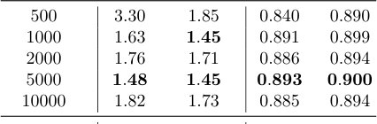
AlphaFold3 va apparat resurslari
Protenix v1.0.4 (AlphaFold3 implementatsiyasi), xaritalar va pozitsiyalarni baholash uchun RELION 5.0.0 hamda validatsiya uchun Phenix v1.21.2-5419 ishlatildi. Tajribalar NVIDIA H100 va L40S GPU'larida, Debian GNU/Linux 12 tizimida bajarildi.
Jadval 11.

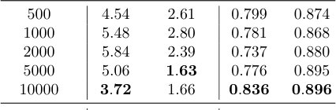
To'qnashuv va bog'lanish uzunligi uchun jarimalar
Strukturalarning fizik jihatdan to'g'riligini ta'minlash uchun regulyarizatorlar qo'llanadi. Bog'lanish uzunligi jarimasi Lbond m atom uchun δbond = 0,2 Å bardoshlik bilan hisoblanadi. To'qnashuv jarimasi Lcollision bog'lanmagan atomlarning bir-biriga kirib ketishini pcollision = 0,4 Å bufer masofasi bilan minimallashtiradi. Ansamblning umumiy ehtimolligi λbond va λcollision jarimalarining yig'indisi orqali aniqlanadi.
Muhim
Modellarning fizik ishonchliligi bog'lanish uzunligi (0,2 Å bardoshlik) va sterik to'qnashuvlar (0,4 Å bufer) uchun jarimalarni minimallashtirish orqali ta'minlanadi.
Jadval S24. EMPIAR-13396 ma'lumotlar to'plamida Fold’EM tuzilmalarini MolProbity baholash
| Kategoriya | Ko'rsatkich | Qiymat 1 | Qiymat 2 |
|---|---|---|---|
| Known | MolProbity score | 1.16 | 1.20 |
| Clashscore | 1.48 | 1.66 | |
| Ramachandran outliers | 0.16 | 0.16 |
Median MolProbity score (↓), clash score (↓) va Ramachandran outlier (↓) qiymatlari, phenix.molprobity (Williams et al., 2018) yordamida hisoblangan.
Relaksatsiya
Qolgan kichik to'qnashuvlarni bartaraf etish uchun strukturalar vakuumda AMBER14 kuch maydoni yordamida relaksatsiyadan o'tkaziladi. Energiya 2,39 kkal/mol chegarasi va 10,0 kkal/mol/Å qattiqlik bilan minimallashtiriladi.
Ehtiyot bo'ling
AMBER14 kuch maydonidan foydalanish geometriyani to'g'rilash uchun zarur, chunki optimizatsiya jarayonida ba'zi kichik sterik ziddiyatlar saqlanib qolishi mumkin.
Metrikalar
Fold’EM tomonidan yaratilgan strukturalarning aniqligini baholash uchun Cα-atomlari bo‘yicha o‘rtacha kvadratik chetlanish (RMSD) ishlatiladi. Dastlab X struktura Kabsh algoritmi yordamida (Rkabsch va tkabsch) eksperimental Xexpt struktura bilan moslashtiriladi. Keyin RMSDCα = √ (1/NCα) * Σ /Rkabschxi + tkabsch - xexpt i/^2 formulasi hisoblanadi, bu yerda NCα — moslashtirilgan atomlar soni.
Global strukturaviy o‘xshashlikni baholash uchun TM-score ishlatiladi, u RMSDga qaraganda lokal chetlanishlarga kamroq sezgir. U TMScore = max(R,t) (1/Lref) * Σ [1 / (1 + (di(R,t)/d0(Lref))^2)] formulasi bilan aniqlanadi, bu yerda Lref — qoldiqlar soni, d0(Lref) = 1.24(Lref-15)^(1/3) - 1.8 Å. TM-score qiymatlari (0, 1] oralig‘ida bo‘lib, katta qiymatlar yuqori o‘xshashlikni bildiradi.
Muhim
RMSD va TM-score metrikalari modellar aniqligini miqdoriy baholash imkonini beradi: RMSD lokal chetlanishni, TM-score esa global o‘xshashlikni o‘lchaydi.
Izoh
TM-score — bu oqsil o‘lchamidan qat’i nazar, atomlararo masofani normallashtiruvchi sifat ko‘rsatkichi.
Stereokimyoviy sifat phenix.molprobity to‘plami yordamida baholanadi. Biz uchta ko‘rsatkichni keltiramiz: clashscore (1000 atomga to‘g‘ri keladigan sterik to‘qnashuvlar soni), Ramachandran chetlanishlari foizi (ϕ va ψ burchaklari ruxsat etilgan hududdan tashqarida bo‘lgan qoldiqlar) va umumiy MolProbity balli. MolProbity balli qancha past bo‘lsa, model sifati shunchalik yuqori bo‘ladi. Ruxsatni baholash uchun FSC=0.143 mezoni ishlatiladi, u phenix.map_box orqali modelni EMD eksperimental zichlik xaritasi bilan solishtirish uchun hisoblanadi.
Krio-EM tasvir hosil qilish modeli va ehtimollik funksiyasi
Zarracha tasviri y uchun X konformatsiyasi va ϕ pozitsiyasi berilganda, logarifmik ehtimollik log p(y / X, ϕ) = log p(y / yc(X, ϕ)) ko‘rinishida yoziladi, bu yerda yc — shovqinsiz simulyatsiya qilingan tasvir.
Tasvir hosil qilish modeli
Atom strukturasi X atom potensiallarining superpozitsiyasi sifatida ifodalanadi: ρX(r) = Σ ρei(r - xi). Furye sohasida molekula potensiali bρX(ξ) elektron sochilish faktorlari fei(∥ξ∥) va fazaviy siljish orqali ifodalanadi. Pϕ proyeksiyalash operatori 3D-potensialni ϕ pozitsiyasiga (R burilish va t siljish) mos tekislikka o‘tkazadi. Markaziy kesim teoremasiga ko‘ra, proyeksiyalash 3D Furye obrazining kesimiga mos keladi. Shovqinsiz tasvir yc Furye sohasida kontrast uzatish funksiyasi (CTF) G(ω) ni qo‘llash orqali hosil bo‘ladi: yc(X, ϕ) = F^-1[G * SϕbρX].
Izoh
CTF (Contrast Transfer Function) — elektron mikroskop tomonidan kiritilgan buzilishlarni tavsiflovchi matematik funksiya.
Shovqin modeli va ehtimollik funksiyasi
Detektor shovqini Puasson taqsimotiga bo'ysunsa-da, qayta ishlangan krio-EM tasvirlari uchun oddiy Puasson modeli mos kelmaydi. Biz shovqinni Furye sohasida qo'shiluvchi Gauss shovqini sifatida modellashtiramiz, bunda har bir koeffitsiyent chastotaga bog'liq σ²(ω) dispersiyaga ega nol o'rtali kompleks Gauss qiymati hisoblanadi. Logarifmik ehtimollik (13)-tenglama bilan ifodalanadi.
Muhim
To'g'ridan-to'g'ri optimallashtirish o'rniga, biz masshtabga invariant bo'lgan normallangan o'zaro korrelyatsiyadan foydalanamiz, bu esa kontrast o'zgarishlariga chidamlilikni ta'minlaydi.
Amalda biz Lcorr(y, y_c) funksiyasidan foydalanamiz. Bu yondashuv global kontrast farqlarini chetlab o'tib, tasvirning fazaviy tuzilishi va chastotaviy tarkibiga e'tibor qaratishga imkon beradi. \Omega chastota diapazoni fon shovqinlari va ishonchsiz yuqori chastotalarni chiqarib tashlaydi.
Atom tuzilmasidan zarracha tasvirini renderlash
Tasvir shakllanish modeli X = \(xi, ei)\i=1m atom tuzilmasiga asoslanadi. Har bir atom potensiali Z_i amplitudali va σpx ≈ 0.45 piksel kenglikdagi izotrop Gauss bilan yaqinlashtiriladi. Proyeksiyani hisoblash uchun 3D-setka qurish shart emas: \phi = (R, t) poza uchun atomlar 2D-ga proyeksiyalanadi va piksel maydoni bo'yicha integral erf(x) xatolik funksiyasi yordamida analitik ravishda topiladi.
Izoh
Analitik renderlash 2D-Gauss funksiyalarining ajraluvchanlik xossasidan foydalanib, hisoblash jarayonini sezilarli darajada tezlashtiradi.
Kontrast uzatish funksiyasi (CTF)
Biz zaif faza yaqinlashuvi doirasida CTF parametrlarini modellashtiramiz. Defokus d_u, d_v va astigmatizm hisobga olingan holda, df(θ) samarali defokus aniqlanadi. CTF fazasi γ(ω) elektron to'lqin uzunligi λ, sferik aberratsiya koeffitsiyenti C_s va faza siljishi \phi ga bog'liq. G(ω) funksiyasi proyeksiyaning Furye-obraziga qo'llaniladi, faza tuzatilgan ma'lumotlar uchun esa /G(ω)/ moduli ishlatiladi.
B-RECOVAR: bootstrap-agregatlangan sinflarni tayinlash
Ab-initio geterogen sharoitlarda algoritm zarralarni sinflarga dastlabki taqsimlashni talab qiladi. CryoDRGN latent koordinatalari yoki RECOVAR kovariatsiyasining asosiy komponentlari kabi standart usullar, har bir sinf uchun zarralar soni kam bo'lganda, shovqin (harakat, defokus, namuna tayyorlash) ta'sirida ishonchsiz bo'lishi mumkin. B-RECOVAR usuli bootstrap-subsamplardan foydalanadigan ansambl yondashuvidir. Har bir iteratsiya regulyarizatsiyalangan teskari proyeksiya orqali past o'lchamli qoldiq fazoni baholaydi, zarracha koeffitsientlarini klasterlaydi va belgilarni o'zaro tekshirish (cross-validation) orqali aniqlaydi. Yakuniy belgilar spektral ovoz berish orqali birlashtiriladi, bunda normallashtirilgan ovoz berish chegarasi zarracha darajasidagi ishonch balli sifatida xizmat qiladi.
Muhim
B-RECOVAR shovqinni filtrlash va sinfga tegishlilik bo'yicha ishonchni baholash uchun ansambl yondashuvidan foydalanib, zarrachalarni tasniflash ishonchliligini oshiradi.
Model va belgilar
K ta zarracha tasvirlari to'plami ko'rib chiqiladi, ular \rho1, \dots, \rhon zichliklari va π_j ulushlariga ega n ta konformatsiyalar aralashmasini ifodalaydi. Pozalar \phik va kontrast uzatish funksiyalari (CTF) G_k konsensus aniqlashdan olingan. Ma'lumotlar \Omegaa Furye qobiqlari bilan cheklangan, bu yerda past chastotalar kontrast uchun, yuqori chastotalar esa shovqin uchun javobgardir. Zarracha k uchun tasvirlash operatori Ak = Gk S\phik sifatida yoziladi, bunda yk = αk^* Ak \rhock + \epsilonk.
Qoldiq fazo
Sinf og'ishlari δj = \rhoj - \bar\rho o'lchami q ≤ n-1 bo'lgan fazoni hosil qiladi. Zarracha qoldig'i rk ≈ \summ=1q bcm Ak Um + \epsilon'k (14-tenglama) sifatida ifodalanadi. n=2 bo'lganda, fazo Δ\rho = \rho1 - \rho2 vektori bilan aniqlanadi. Asos W_m va koeffitsientlar ildeb_k ni baholash uchun deflyatsiyali niqoblangan eng kichik kvadratlar usuli qo'llaniladi. M niqobi erituvchi hissasini bostiradi va baholash aniqligini oshiradi. Barcha modalar tanlangandan so'ng, koeffitsientlar har bir zarracha uchun birgalikda aniqlanadi va k-means klasterlash qo'llaniladi.
Izoh
Deflyatsiyali eng kichik kvadratlar usuli tuzilmaning eng muhim komponentlarini (modalarni) ketma-ket topadi va qolgan signallarni ajratib olish uchun ularni ma'lumotlardan "ayirib tashlaydi".
O'zaro tekshirish orqali aniqlashtirish
Har bir iteratsiyada zarralar J va J' ikkita guruhga (fold) bo'linadi. Har bir sinf uchun bitta fold bo'yicha ilde\rhojF rekonstruksiyasi quriladi, so'ngra boshqa folddagi zarralar skj = Lcorr(\checkyk, Ak ilde\rhojFc) korrelyatsiyasi orqali baholanadi (15-tenglama). Fold ichidagi baholarni markazlashtirish rekonstruksiya aniqligidagi farqlarni kompensatsiya qiladi. Bu yondashuv o'z-o'zini korrelyatsiyani istisno qiladi.
Ehtiyot bo'ling
Usul har bir sinf uchun ikkala foldda yetarli miqdordagi zarralarni talab qiladi, aks holda o'zaro tekshirish beqaror natijalarga olib kelishi mumkin.
Ansamblli ovoz berish
Konformatsiya uchun zarrachalar soni kam bo'lganda, qoldiq pastki fazoda moslashtirish beqaror bo'lishi mumkin (hatto n=2 bo'lganda ham), chunki tasodifiy initsializatsiyalar shovqin yo'nalishini strukturaviy signal deb qabul qilishi mumkin. Buni bartaraf etish uchun 2-algoritmning B ta randomizatsiyalangan replikasi qo'llaniladi, ularning har biri zarrachalar to'plami I_b, tanlangan chastota diapazoni va mustaqil initsializatsiyadan foydalanadi. ildec^(b)_k sinf belgilari Vengriya algoritmi yordamida moslashtiriladi.
n=2 uchun muvozanatlangan aniqlik \psib va ovozlar kovariatsiyasi (16)-tenglamaga muvofiq hisoblanadi, bu yerda β = π₁ - π₂. Spektral meta-o'rganuvchi yordamida u \in \mathbbRB og'irliklari olinadi, ular ildev_k vaznli ovoz berish va κk = / ildevk/ / \sumb=1B /ub/ ishonchlilik ko'rsatkichini aniqlashga imkon beradi. n > 2 bo'lganda, usul «biriga qarshi barchasi» ko'rsatkichlariga qo'llaniladi.
Muhim
Ansamblli ovoz berish B=24 replika natijalarini spektral meta-tahlil orqali birlashtirib, κ_k ishonchlilik ko'rsatkichi yordamida kichik tanlamalarda klassifikatsiya barqarorligini oshiradi. [!tip] Vengriya algoritmi — turli algoritmlar ishga tushirilganda sinf belgilarini bir-biriga moslashtirish uchun ishlatiladigan optimallashtirish usuli.
RECOVAR bilan taqqoslash
RECOVAR va B-RECOVAR konsensus pozitsiyalar va CTF'lardan foydalanadi va neyron tarmoqlarni o'qitishni talab qilmaydi. RECOVAR'dan farqli o'laroq, B-RECOVAR faqat n-1 sinf og'ish modalarini baholaydi, bu esa zarrachalar soni kam bo'lganda shovqin ta'sirini kamaytiradi. B-RECOVAR (15)-tenglamadagi o'zaro tekshirilgan aniqlash jarayonini qo'llaydi, bu zarracha va u solishtirilayotgan hajm o'rtasidagi o'z-o'zidan korrelyatsiyani istisno qiladi.
Amalga oshirish tafsilotlari
kmin=3 va kmax \in \24, 32, 40\ Furye piksellari ishlatiladi. Regulyarizatsiya λ_w = 0,1 ga teng. Erituvchi niqobi eng katta zichlikka ega 8% vokselni qamrab oladi va 2 voksel standart og'ish bilan Gauss tekislanadi. Parametrlarga T=8 yangilash iteratsiyasi, B=24 replika va 80% zarrachalar kichik tanlamasi kiradi. Har bir konformatsiya uchun 5000 dan kam zarracha bo'lganda, ansamblli agregatsiya juda muhimdir. 10⁴ zarracha uchun D=128 panjarada hisoblash taxminan 10 daqiqa protsessor vaqtini oladi.
Giperparametrlar va amalga oshirish tafsilotlari
Barcha tajribalar uchun yagona giperparametrlar to‘plami qo‘llanildi. Xotira cheklovlarini hisobga olgan holda, har bir optimallashtirish bosqichida \min(/Y/, 128) miqdoridagi zarralardan foydalaniladi. Optimallashtiruvchi sifatida Adam algoritmi tanlangan bo‘lib, o‘rganish tezligi (learning rate) 0,06 va maksimal gradient normasi 0,6 qilib belgilangan. Bog‘lanishlar va to‘qnashuvlar uchun regulyarizatsiya koeffitsiyentlari mos ravishda λbond = 10⁻³ va λcollision = 0,09 ga teng. Tashqi iteratsiyalar soni R real ma’lumotlar uchun 3 tani, sintetik ma’lumotlar uchun esa 5 tani tashkil etadi.
Izoh
Adam — bu har bir parametr uchun o‘rganish tezligini avtomatik moslashtiruvchi optimallashtirish algoritmi bo‘lib, u neyron tarmoqlarning tezroq yaqinlashishiga yordam beradi.
Oldingi tadqiqotlardagi a-priori shartga kelsak, \log p(Z/a) ehtimolligi juda muhim edi, chunki u optimallashtirish jarayonini Pairformer modeli uchun xos bo‘lmagan sohalarga o‘tib ketishidan saqlardi. Hozirgi parametrlashda bu vazifa qisman qayta parametrlash (reparameterization) jarayoni orqali bajariladi. H dagi siljishlar shartli o‘zgaruvchiga faqat g funksiyasi orqali ta’sir qilganligi sababli, ular model arxitekturasi tomonidan qo‘llab-quvvatlanadigan yo‘nalishlar bazisida ifodalanadi.
Muhim
Qayta parametrlash usuli optimallashtirish jarayonini barqarorlashtiradi va qo‘shimcha a-priori cheklovlarsiz modelning to‘g‘ri ishlashini ta’minlaydi.
Jadval 5. Fold’EM va AlphaFold3 taqqoslanishi
| Metrika | Usul | Qiymat 1 | Qiymat 2 | Qiymat 3 | Qiymat 4 |
|---|---|---|---|---|---|
| Cα RMSD (↓, Å) | Fold’EM | 1.78 | 1.57 | 2.35 | 3.07 |
| Fold’EM | 3.948 | 3.941 | 7.684 | 6.885 | |
| AlphaFold3 | 8.96 | 11.22 | 7.780 | 26.670 | |
| TM-score (↑) | Fold’EM | 0.969 | 0.976 | 0.948 | 0.917 |
| Fold’EM | 0.9174 | 0.9182 | 0.810 | 0.809 | |
| AlphaFold3 | 0.699 | 0.661 | 0.7981 | 0.4772 |
Jadval 8. MolProbity strukturaviy sifat ko'rsatkichlari
| Ko'rsatkich | Qiymat 1 | Qiymat 2 | Qiymat 3 | Qiymat 4 |
|---|---|---|---|---|
| MolProbity score | 1.18 | 1.15 | 1.25 | 1.15 |
| 1.50 | 1.53 | 1.58 | 1.79 | |
| Clashscore | 3.72 | 3.64 | 4.83 | 3.56 |
| 1.21 | 2.35 | 1.56 | 2.21 | |
| Ramachandran outliers | 0.00 | 0.25 | 0.12 | 0.00 |
| 1.26 | 0.71 | 0.98 | 0.66 |
Jadval 13. Modellashtirish usullarini taqqoslash
| Usul | Qiymat 1 | Qiymat 2 | Qiymat 3 | Qiymat 4 |
|---|---|---|---|---|
| Fold’EM | 3.22 | 7.61 | 3.63 | 4.81 |
| RELION (ab initio) | 8.32 | 8.32 | 23.77 | 8.76 |
| cryoDRGN-AI | 33.28 | 33.28 | 41.60 | 18.49 |
| Fold’EM | 3.25 | 3.35 | 3.51 | 3.55 |
| RELION (ab initio) | 6.93 | 7.92 | 7.23 | 8.32 |
| cryoDRGN-AI | 27.73 | 20.80 | 33.28 | 27.73 |
| Fold’EM | 3.22 | 3.25 | 3.51 | 3.51 |
| RELION (ab initio) | 6.93 | 7.92 | 7.23 | 7.92 |
| cryoDRGN-AI | 28.81 | 16.64 | 27.73 | 27.73 |
| AlphaFold3 | 8.21 | 19.29 | - | - |
| PDB | 3.39 | 3.47 | - | - |
Jadval 15. Ma'lum va ab initio tuzilmalar uchun MolProbity baholashi
| Kategoriya | Ko'rsatkich | Qiymat 1 | Qiymat 2 | Qiymat 3 | Qiymat 4 |
|---|---|---|---|---|---|
| Known | MolProbity score | 1.16 | 1.13 | 1.09 | 1.11 |
| Clashscore | 3.72 | 3.40 | 3.01 | 3.16 | |
| Ramachandran outliers | 0.00 | 0.00 | 0.12 | 0.00 | |
| Ab initio | MolProbity score | 1.39 | 1.48 | 1.44 | 1.46 |
| Clashscore | 5.85 | 7.28 | 6.65 | 6.72 | |
| Ramachandran outliers | 0.12 | 0.12 | 0.12 | 0.25 |
Usullar
Fold’EM — bu to‘g‘ridan-to‘g‘ri xom krio-EM tasvirlaridan atom tuzilmalari ansambli va zarrachalarga xos bo‘lgan nojo‘ya o‘zgaruvchilarni (nuisance variables) birgalikda aniqlaydigan usuldir. Ansamblning har bir a’zosi AlphaFold3 diffuziya modelini shartlaydigan oraliq Pairformer holati bilan ifodalanadi, zarrachaning nojo‘ya o‘zgaruvchilari esa uning fazodagi holati (pose) va geterogen namunalarda uning diskret klassidir. Jarayon zarrachalarni umumiy koordinatalar tizimiga keltirishdan boshlanadi, so‘ngra algoritm strukturaviy holatlarni yangilash va nojo‘ya o‘zgaruvchilarni aniqlashtirish o‘rtasida almashinib turadi. Rekonstruksiya qilingan hajmlar faqat initsializatsiya va kadrlarni tekislash uchun xizmat qiladi (1-rasm, 1-algoritm).
Kirish ma’lumotlari, initsializatsiya va koordinatalar tizimi
Fold’EM uchun kirish ma’lumotlari zarracha tasvirlari to‘plami va molekulyar ketma-ketlikdir. Piksel/boks o‘lchami va CTF parametrlari oldindan ma’lum deb qabul qilinadi, zarrachalar markazlashtirilgan bo‘lishi shart. Ketma-ketlik yagona strukturaviy kirish hisoblanadi; AlphaFold3 MSA va bashoratni hech qanday tashqi atom modelisiz amalga oshiradi. Geterogen ma’lumotlar uchun klasslar soni n ko‘rsatiladi, gomogen ma’lumotlar uchun n=1.
Izoh
Krio-EM (krio-elektron mikroskopiya) — biomolekulalarni muzlatilgan holatda tasvirga olish usuli bo‘lib, u molekulalarning tabiiy tuzilishini saqlab qolishga imkon beradi.
Ab initio rejimida fazoviy holatni baholash uch bosqichda amalga oshiriladi: (i) VDAM (moslashuvchan momentlarga ega gradient tushish algoritmi) tasodifiy initsializatsiyadan qo‘pol hajmni va zarracha holatlarini baholaydi; (ii) Viner teskari proyeksiyasi yordamida konsensus zichlik rekonstruksiya qilinadi; (iii) AlphaFold3 bashorati strukturaviy koordinatalar tizimini belgilash uchun ushbu zichlikka joylashtiriladi. Krio-EM ehtimolligi global qattiq transformatsiyalarga nisbatan invariant bo‘lgani uchun, yechim SE(3) global transformatsiyasigacha aniqlanadi va u barcha zarracha holatlarini moslashtirilgan strukturaga nisbatan ifodalash orqali belgilanadi.
Zarrachalarni joylashtirish va klassifikatsiya qilish
Klass yorliqlari noma’lum bo‘lganda, biz B-RECOVAR (bootstrapped residual-subspace estimator) usulidan foydalanamiz. Zarrachalar soni kam bo‘lganda cryoDRGN yoki RECOVAR usullari klasslarni har doim ham ishonchli ajrata olmaydi, shuning uchun B-RECOVAR ikki holat uchun: (i) klass og‘ish hajmlarini konsensus rekonstruksiyadan qolgan qoldiqlarga moslashtiradi; (ii) klasslar bo‘yicha rekonstruksiyalar bilan o‘zaro tekshirish orqali tayinlovlarni aniqlashtiradi; (iii) spektral meta-o‘rganish yordamida randomizatsiyalangan kichik namunalar natijalarini birlashtiradi. Ikkitadan ortiq holatlar uchun deflyatsiya qo‘llanadi. Klassifikatsiyadan so‘ng, har bir klass uchun yordamchi hajm quriladi (2-algoritm, D.4-ilova).
Ansamblli xulosa
Strukturani aniqlash jarayoni zarrachalar, mos yozuvlar strukturasi va ularning o‘zaro pozitsiyalariga asoslanadi. Geterogen namunalar uchun ma’lumotlar klassifikatsiyalanadi va pozitsiyalar mos sinflar bilan sinxronlashtiriladi. 2-tenglama strukturaviy holatlarni H va xalaqit beruvchi o‘zgaruvchilarni \eta (zarrachalar pozitsiyasi va sinflari) bog‘laydi; ularni optimallashtirish koordinatali ko‘tarilish usuli orqali amalga oshiriladi. Har bir r iteratsiyada algoritm avval \eta(r) ni qotirib, H^(r+1) strukturani yangilaydi, so‘ngra X^(r+1) strukturani qotirib, \eta(r+1) o‘zgaruvchilarni aniqlashtiradi.
Izoh
Koordinatali ko‘tarilish usuli — bu murakkab optimallashtirish masalalarini yechish uchun bir guruh parametrlarni qotirib, boshqalarini navbatma-navbat yaxshilashga asoslangan iterativ yondashuv.
Birinchi bosqichda (strukturani aniqlash) H^(r+1) yangilanishi logarifmik ehtimollikni maksimallashtirish orqali amalga oshiriladi (3-tenglama). Biz IT-Opt ga o‘xshash yondashuvdan foydalanamiz, bunda ehtimollik gradientlari AlphaFold3 latent holatlariga o‘tkaziladi. Generativ model sifatida diffuziya jarayoni (4-tenglama) qo‘llaniladi, bunda X_T ~ N(0, σ²_T I) dan t=0 gacha bo‘lgan teskari diffuziya g(H) ga asoslangan strukturani shakllantiradi. Har bir iteratsiya uchun Q ta mustaqil diffuziya yugurishi bajariladi va H yugurishlar o‘rtasida «xotira» sifatida saqlanadi. Har bir t qadamda latent holatlar γ_h qadam hajmi bilan gradient ko‘tarilishi orqali yangilanadi (5-tenglama), bu esa AlphaFold generatorini eksperimental ma’lumotlar bilan tasdiqlangan konfiguratsiyalarga yo‘naltiradi.
Ikkinchi bosqichda (xalaqit beruvchi o‘zgaruvchilarni aniqlash) X^(r+1) struktura qotiriladi va har bir k zarracha uchun ehtimollik maksimallashtiriladi (6-tenglama). Bu pozitsiyani \phik (zarrachani joriy strukturalarga nisbatan tekislash) va sinfni c_k (zarrachani ansamblning eng mos a’zosiga biriktirish) aniqlashtirishni o‘z ichiga oladi. Pozitsiyalar etalon koordinatalar tizimida ifodalanadi, bu global SE(3) kalibrlash noaniqligini yo‘qotadi. Ushbu ikki bosqichning almashinuvi past signal-shovqin nisbatida juda muhim, chunki pozitsiya yoki klassifikatsiyadagi xatolar strukturaviy gradientlarni buzishi mumkin. Diffuziyaning stoxastik tabiati va mini-batchlardan foydalanish sababli maqsadli funksiyaning monoton yaxshilanishi kafolatlanmasa-da, bu yondashuv struktura va zarracha parametrlarini birgalikda aniqlash uchun ishonchli asos bo‘lib xizmat qiladi.
Tajribalar
Biz Fold’EM ishini ma’lum tuzilmalardan olingan sintetik zarrachalar va EMPIAR’dagi eksperimental to‘plamlar yordamida baholaymiz (A2 va A1 jadvallari). 4.1 va 4.2-bo‘limlarda biz ikkita asosiy yechimni sinovdan o‘tkazamiz: rekonstruksiya qilingan zichlik o‘rniga zarrachalarning o‘zi orqali boshqaruv va terminal embedding yoki atom koordinatalari o‘rniga oraliq Pairformer holatini optimallashtirish. 4.3 va 4.4-bo‘limlar gomogen namunalar va ikki holatli aralashmalar uchun tuzilmani aniqlashni baholaydi. Bunda avval ma’lum yo‘nalishlar (orientatsiyalar) bilan, so‘ngra ab initio (zarrachalardan aniqlangan yo‘nalishlar bilan) sinovlar o‘tkaziladi. Ma’lum yo‘nalishlar rejimida sintetik zarrachalarni renderlash uchun ishlatilgan yoki eksperimental ma’lumotlarni aniqlashdan olingan parametrlar qo‘llaniladi. 4.5-bo‘lim B-RECOVAR yordamida yorliqsiz klassifikatsiyani, 4.6-bo‘lim esa uzluksiz geterogenlikni baholaydi. Agar boshqacha ko‘rsatilmagan bo‘lsa, biz Cα RMSD va TM-score ko‘rsatkichlarini, shuningdek, Fourier qobig‘i korrelyatsiyasi (FSC) 0.143 chegarasini kesib o‘tadigan aniqlik darajasini keltiramiz (D.2.4 ilovasi). Zichlikka asoslangan bazaviy usullar sifatida RELION va cryoDRGN (ma’lum yo‘nalishlar bilan), shuningdek, RELION ab initio va cryoDRGN-AI (ularsiz) ishlatiladi. Nazorat sifatida AlphaFold3’ning eksperimental boshqaruvsiz natijalari ham keltiriladi.
Zarrachalar bo‘yicha boshqaruv vs. zichlik bo‘yicha boshqaruv
Eksperimental qurilma. Biz zarrachalarning o‘zi orqali boshqaruv, teng miqdordagi zarrachalar bilan rekonstruksiya qilingan zichlik orqali boshqaruvga qaraganda aniqroq tuzilmani tiklaydimi yoki yo‘qligini tekshiramiz. Buning uchun biz 8U4E sintetik yig‘indisini (3 304 qoldiq) olamiz va SNR 0.005 da 500 ta zarracha bo‘yicha ab initio xulosa chiqaramiz. Konsensus zichlik baholangan yo‘nalishlar bo‘yicha rekonstruksiya qilinadi. Bazaviy usul (zichlik bo‘yicha boshqaruv) xuddi shu Pairformer holatini optimallashtiradi, lekin zarrachalar ehtimolligini konsensus zichlikka nisbatan yo‘qotish (loss) bilan almashtiradi.
Natijalar. Teng miqdordagi zarrachalarda zarrachalar bo‘yicha boshqaruv yig‘indini tiklaydi, zichlik bo‘yicha boshqaruv esa yo‘q. AlphaFold3’ning boshqaruvsiz prognozi Cα RMSD 22.99 Å ni beradi. Zichlik bo‘yicha boshqaruv buni 17.95 Å gacha kamaytiradi, Fold’EM esa 6.88 Å va TM-score 0.809 ga erishadi (A12 jadvali), zichlik qobig‘ini aniq kuzatib boradi (2-rasm). 500 ta zarrachada zichlik qo‘pol bo‘lib, u zarrachalar ehtimolligi funksiyasini almashtira olmaydi.
Izoh
SNR (signal-shovqin nisbati) — ma’lumotlar sifatini ko‘rsatuvchi ko‘rsatkich; qiymat qanchalik past bo‘lsa, foydali signalni ajratib olish shunchalik qiyinlashadi.
H ni optimallashtirish vs. Z va koordinata fazosi
Eksperimental qurilma. Biz oraliq Pairformer holatini (H) optimallashtirishning samaradorligini terminal embedding (Z) yoki atom koordinatalariga bevosita ta’sir qilish bilan solishtiramiz. Sinovlar 9UGB va 8U4B sintetik yig‘indilarida (SNR 0.005, 250 yoki 1 000 zarracha, ma’lum yo‘nalishlar) o‘tkazildi. Biz Fold’EMni IT-Opt va teskari diffuziya jarayonining koordinatali boshqaruvi bilan solishtiramiz.
Natijalar. H ni optimallashtirish eng kuchli boshqaruvni ta’minlaydi. Uchala usul ham 9UGB uchun AlphaFold3 prognozini yaxshilaydi, lekin Fold’EM eng yaxshi Cα RMSD, TM-score va FSC aniqligini ko‘rsatadi. Kattaroq 8U4B yig‘indisida faqat Fold’EM tuzilmani tiklaydi, boshqa usullar esa dastlabki prognozni yomonlashtiradi (3-rasm). Farq yirik yig‘indilarda yaqqol namoyon bo‘ladi, chunki Z yoki koordinatalarning filtrlanmagan yangilanishlari modelni etalondan uzoqlashtiradi.
Bir xil namunalar bo‘yicha qo‘llanma
Eksperimental sozlama. Tadqiqotchilar bitta konformatsion holat strukturasini aniqlash uchun zarur bo‘lgan minimal zarralar sonini, ham ma’lum yo‘nalishlar (poses), ham ab initio usuli yordamida baholadilar. Sintetik nishonlar sifatida (Jadval A2) 9UGB, 9UGB, 8U4B va 8U4E tuzilmalari 0.01 va 0.005 signal-shovqin nisbatida (SNR) ishlatildi. Ma’lum yo‘nalishlar uchun 100 dan 1000 tagacha, ab initio uchun esa 500 ta zarracha qo‘llanildi. Shuningdek, beshta eksperimental ma’lumotlar to‘plami (Jadval A1) sinovdan o‘tkazildi: BIIG2 Fab bilan bog‘langan integrin α 5β 1 (9B9J), 9B77, 8PWH va ikkita UvrA holati (9GXQ, 9GXR). Ma’lum yo‘nalishlarda depozit qilingan zarralarning 1/1000 dan 1/50 qismigacha, ab initio uchun esa 9B9J va 9B77 uchun 1000 ta, qolganlari uchun 5000 ta zarracha ishlatildi. Natijalar bazaviy usullar bilan solishtirildi, bunda FSC rekonstruksiya qilingan zichlik bo‘yicha, Fold’EM uchun esa atom modelidan renderlangan xarita bo‘yicha hisoblandi.
Izoh
Ab initio usuli (lotincha «boshidan») — bu ma’lum shablonlar yoki zarralar yo‘nalishlarisiz, «noldan» struktura qurish usuli bo‘lib, u katta hisoblash resurslarini talab qiladi.
Natijalar. Sintetik ma’lumotlarda 100 ta zarracha ma’lum yo‘nalishlar bilan yetarli bo‘ldi. AlphaFold3 Pma1 konformatsiyasini (9UGB) noto‘g‘ri bashorat qildi (TM-score 0.699, Cα RMSD 8.96 Å; Rasm 4A). Fold’EM 100 ta zarracha va 0.005 SNR bilan 3.25 Å FSC aniqligiga, 0.965 TM-score va 1.01 Å Cα RMSD ga erishdi, bu depozit qilingan modelga yaqin (3.39 Å; Jadval A5, A6). 9UGC, 8U4B va 8U4E uchun 3.45, 3.80 va 4.18 Å aniqlik hamda 0.983, 0.979 va 0.973 TM-score olindi. cryoDRGN va RELION usullari pastroq natija ko‘rsatdi (aniqlik > 5 Å). Zarrachalar sonini 1000 tagacha oshirish Fold’EM natijalarini sezilarli o‘zgartirmadi. Ab initio rejimida 500 ta zarracha 9UGB uchun 3.25 Å aniqlikni (SNR 0.005, TM-score 0.976, Cα RMSD 1.57 Å) ta’minladi, RELION va cryoDRGN-AI esa 8.93 va 27.70 Å ko‘rsatdi (Jadval A11, A12).

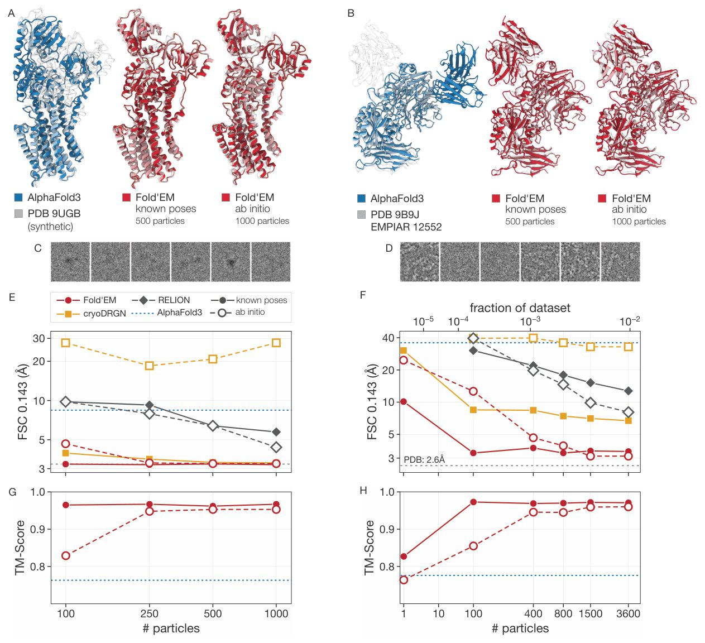
Rasmning to'liq tavsifi
4-rasm: Fold’EM atom tuzilmalarini ma’lum pozalar bilan depozit qilingan zarrachalarning 0,03% dan va ab initio 0,27% dan tiklaydi. Har bir ustun bitta nishon: chapda sintetik ma’lumotlar to‘plami (A, C, E, G) va o‘ngda eksperimental (B, D, F, H). Qatorlar tuzilmalarni (A, B; AlphaFold3 ko‘k rangda, Fold’EM qizil rangda, depozit qilingan model kulrangda), vakillik zarrachalarini (C, D), FSC ruxsatini (E, F) va zarrachalar soniga qarab depozit qilingan modelga nisbatan TM-ballni (G, H) ko‘rsatadi; to‘ldirilgan markerlar ma’lum pozalarni, bo‘sh markerlar ab initio ni, nuqtali chiziq esa AlphaFold3 bashoratini bildiradi. Chapda: Pma1, xamirturush plazmatik H+-ATPaza, faollashtirilgan (E2P) holatida (9UGB); SNR 0,005 da sintetik zarrachalar. AlphaFold3 transmembran domenini bashorat qiladi, lekin sitozolik A-, N- va P-domenlarini noto‘g‘ri joylashtiradi, ularning joylashuvi katalitik sikl davomida o‘zgaradi (TM-ball 0,70). Fold’EM depozit qilingan holatni tiklaydi, ma’lum pozalar bilan 100 ta zarrachadan 3,3 Å va 0,97 TM-ballga, ab initio esa 500 ta zarrachadan 3,3 Å ga erishadi. O‘ngda: Integrin α5β1–BIIG2 (9B9J, EMPIAR-12552), bu yerda AlphaFold3 ikkala komponent foldini bashorat qiladi, lekin Fabni noto‘g‘ri joyga qo‘yadi (TM-ball 0,78); antikor–antigen juftliklari kam juftlashgan ko-evolyutsion ma’lumot beradi. Fold’EM bog‘langan kompleks va epitopni tiklaydi, garchi interfeys o‘zgaruvchan ilmoqlari bo‘lmasa ham, ma’lum pozalar bilan 100 ta zarrachadan 3,5 Å va 0,97 TM-ballga, ab initio esa 1000 ta zarrachadan 3,5 Å ga erishadi; hech qanday bazaviy usul 6 Å ga yetmaydi va Fold’EM hatto eng kam zarrachalar sonida ham AlphaFold3 dan ustun turadi. Siyrak zarrachalar dalillari shu tariqa strukturaviy aprior bilim tomonidan ta’minlangan global joylashuvni tuzatadi. Ruxsat (Å; FSC = 0,143).
Eksperimental ma’lumotlarda Fold’EM bazaviy bashoratlar mavjud bo‘lganda struktura aniqligini oshiradi. 9B9J holatida AlphaFold3 Fab-fragmentni noto‘g‘ri joylashtirdi (Rasm 4B), ammo Fold’EM 400 ta zarracha (ab initio) bilan to‘g‘ri epitopni aniqladi, 3.5 Å dan yuqori aniqlik va 0.9 dan ortiq TM-score ga erishdi (Rasm 4F, 4H), bazaviy usullar esa 6 Å chegarasidan o‘ta olmadi. 9B77, 9GXQ va 9GXR uchun depozit qilingan zarralarning 1/1000 qismi bilan Fold’EM 2.88, 3.08 va 3.18 Å aniqlikka erishdi (Jadval A3). 8PWH istisno bo‘ldi: Fold’EM TM-score ni 0.397 dan 0.900 ga ko‘targan bo‘lsa-da (Jadval A4), 1/100 dan ortiq zarralar bilan cryoDRGN va RELION yuqoriroq aniqlik ko‘rsatdi (5.16–5.01 Å ga qarshi 7.06–6.13 Å).
Ikki holatli geterogenlik sharoitida boshqaruv
Eksperimental dizayn. Mualliflar aralash zarrachalar to‘plamidan ikkita konformatsion holatni ajratib olish imkoniyatini o‘rgandilar. Sintez qilingan ma’lumotlar (Pma1 holatlari: 9UGB va 9UGC, Cα RMSD bo‘yicha 9 Å farq, SNR 0.01 va 0.005, 250–1000 zarracha) va eksperimental ma’lumotlar (EMPIAR-13396, abazik saytli DNK bilan bog‘langan UvrA: 9GXQ va 9GXR, 500–10 000 zarracha) ishlatildi. Ab initio rejimida B-RECOVAR sinf belgilarini initsializatsiya qiladi, Fold’EM esa struktura, poza va sinflarni iterativ tarzda aniqlashtiradi. Bazaviy usullar (RELION, cryoDRGN) avval zarrachalarni klasterlaydi, so‘ngra har bir to‘plam uchun zichlikni rekonstruksiya qiladi.
Izoh
SNR (Signal-to-Noise Ratio) — signal va shovqin nisbati; bu ko‘rsatkich qanchalik past bo‘lsa, shovqin darajasi yuqori bo‘lgani uchun strukturani tiklash shunchalik qiyinlashadi.
Natijalar. Sintez qilingan ma’lumotlarda holatlarni ajratish uchun bir necha yuz zarracha kifoya qiladi. AlphaFold3 ularning hech birini tiklay olmadi (TM-score 0.699 va 0.661; 5-rasm). Ma’lum pozalar bilan Fold’EM SNR 0.005 va 250 zarracha bilan 3.3 va 3.5 Å aniqlikka erishadi (TM-score 0.96 va 0.98; A19, A20-jadvallar). Shu sharoitda RELION 7.9 Å dan yomonroq natija beradi, cryoDRGN esa 3.6 va 4.8 Å ga erishish uchun 1000 zarracha talab qiladi. Ab initio rejimida Fold’EM SNR 0.005 va 500 zarracha bilan 3.4 va 3.6 Å aniqlikni ko‘rsatadi (TM-score 0.95 va 0.94; A21, A22-jadvallar). RELION ab initio va cryoDRGN-AI mos ravishda 6.9 va 16.6 Å dan yomonroq natija beradi. 250 zarracha va SNR 0.005 holatida 9UGB 7.6 Å gacha degradatsiyaga uchraydi, bu parametrlarni birgalikda aniqlash uchun chegaraviy qiymatdir.
UvrA uchun muvaffaqiyat dastlabki bashoratning aniqligiga bog‘liq. AlphaFold3 9GXR ni bashorat qiladi (3.54 Å, TM-score 0.886), lekin 9GXQ ni emas (11.69 Å, TM-score 0.734). Ma’lum pozalar bilan Fold’EM 3.09 va 2.95 Å ga erishadi (A15-jadval), cryoDRGN — 4.34 va 4.41 Å, RELION — 6.89 va 10.75 Å. Ab initio rejimida Fold’EM 9GXR ni 3.58 Å (500 zarracha) va 3.02 Å (5000 zarracha) gacha tiklaydi. 9GXQ 10 000 zarracha bilan 4.63 Å gacha tiklanadi (TM-score 0.836; 6-rasm; A17, A18-jadvallar). RELION va cryoDRGN-AI 8 Å dan yomonroq natija beradi. Zarrachalar sonidagi farq 9GXQ holati AlphaFold3 bashoratida yo‘qligi bilan izohlanadi.
Tiklangan strukturalar funksional jihatdan ahamiyatli: Fold’EM DNK dupleksiga xanjar (Y62, Q65, F66) kiritilishini va unga bog‘liq deformatsiyani to‘g‘ri aniqlaydi, AlphaFold3 esa kanonik strukturani bashorat qiladi (6G-rasm).
B-RECOVAR yordamida belgisiz klassifikatsiya
Eksperimental sozlama. Geterogen tajribalar dastlabki klass belgilariga bog'liq. Biz mavjud embedding usullari ishonchsiz bo'lgan kam sonli zarrachalar holatida tayanch tuzilmalarsiz zarrachalarni tasniflash imkoniyatini o'rgandik. Baholash uchun biz EMPIAR-13396 UvrA ma'lumotlar to'plamidan foydalandik va har bir holat uchun 250 dan 5000 tagacha zarrachani (jami zarrachalarning 0,13% dan 2,6% gacha) tahlil qildik. Har bir namuna hajmi uchun konsensus aniqlashdan olingan pozalar bilan o'nta tasodifiy iteratsiya o'tkazildi va natijalar dastlabki belgilar bilan solishtirildi. Biz B-RECOVAR usulini RECOVAR va cryoDRGN (o'nta ishga tushirish bo'yicha mediana) bilan taqqosladik. B-RECOVAR ablyatsiyasi har bir holat uchun 1000 ta zarracha darajasida amalga oshirildi.
Izoh
Ablyatsiya — bu modelning har bir komponenti yakuniy natijaga qanday hissa qo'shishini tushunish uchun ularni ketma-ket o'chirib tashlash yoki o'zgartirish usuli.
Natijalar. 500 ta zarrachadan boshlab, B-RECOVAR analoglarga qaraganda yuqori aniqlik va barqarorlikni ko'rsatadi (7A-rasm). RECOVAR usulida bunday ma'lumotlar hajmida kovariatsiya yo'nalishi tasodifiy tanlovga bog'liq bo'lib, aniqlik tasodifiy darajadan deyarli mukammalgacha o'zgarib turadi. B-RECOVAR 250 ta zarrachada kamroq aniqlik ko'rsatsa-da, 5000 ta zarrachada 92,5% aniqlikka erishadi (farq 1 foiz punktidan kam); cryoDRGN barcha holatlarda pastroq natija beradi. Ansamblning normallashtirilgan marjini κ ishonchlilik ko'rsatkichi bo'lib xizmat qiladi: aniqlik uning o'sishi bilan monoton ravishda oshib boradi va eng yuqori binda (zarrachalarning 44%) 80% ga yetadi (7B-rasm). Fold’EM usuli ushbu ko'rsatkichdan filtr sifatida foydalanadi: eng kam ishonchli zarrachalarning yarmini olib tashlash konformatsiyalar o'rtasidagi ajralishni (Cα RMSD orqali o'lchanadi) oshiradi va TM-score qiymatini yaxshilaydi (A26-jadval).
Komponentlar tahlili (7C, D-rasmlar) shuni ko'rsatdiki, bazaviy baholovchi (shovqinni tuzatish va erituvchi niqobisiz bir o'lchovli RECOVAR analogi) 63,8% aniqlikka erishadi (d'=0,54). Tanlash sohasini erituvchi niqobi bilan cheklash aniqlikni 69,1% gacha, belgilarni sinflar bo'yicha rekonstruktsiyalar bilan o'zaro tekshirish orqali aniqlashtirish esa 72,1% gacha oshiradi. Eng katta o'sish zarrachalar to'plamlari, chastota diapazonlari va initsializatsiyalar bo'yicha ansambllash orqali erishiladi, bu aniqlikni 80,6% ga yetkazadi va holatlar o'rtasidagi ajralishni d'=1,13 dan d'=2,33 gacha ikki barobar oshiradi.
Uzluksiz geterogenlik sharoitida boshqaruv
Eksperimental sozlama. Biz uzluksiz konformatsion trayektoriyani optimallashtirilgan Pairformer holatlari va ularning interpolyatsiyasi orqali ifodalash mumkinligini tekshirdik. Buning uchun 1HZH PDB yozuvidan Fab-domenni 360° burish orqali olingan 100 ta atom modeli va 25 000 ta sintetik zarrachani (SNR 0,01, har bir holat uchun 250 ta) o'z ichiga olgan CryoBench IgG-1D ma'lumotlar to'plamidan foydalandik. Har bir zarracha uchta koordinata tizimiga joylashtirildi: cryoDRGN VAE latent fazosi, RECOVAR bosh komponentlari va B-RECOVAR qoldiq ostfazosi. Har bir usul uchun trayektoriya bo'ylab sakkizta tayanch konformatsiya tanlandi va ularning har biri uchun 250 ta eng yaqin zarracha asosida Pairformer tuzilmasi optimallashtirildi. Bu H1, \dots, H8 holatlarini berdi. Interpolyatsiya qilingan H(α) holati qo'shni tayanch nuqtalarining qavariq kombinatsiyasi sifatida hisoblandi. Har bir model uchun teskari diffuziya va koordinatalar fazosida aniqlashtirish amalga oshirildi (8-rasm).
Izoh
VAE (variatsion avtokodlovchi) — bu murakkab ma'lumotlarni ixcham «latent» fazoga siqib, oqsil shaklining uzluksiz o'zgarishlari kabi yashirin qonuniyatlarni aniqlashga yordam beradigan neyron tarmoq turi.
Natijalar. Sakkizta tayanch nuqtasi trayektoriyani tavsiflash uchun yetarli bo'ldi. B-RECOVAR usulida median NCC ko'rsatkichi etalonning 92% ini, TM-score esa 0,93 ni tashkil etdi (tayanch nuqtalari uchun mos ravishda 89% va 0,91). CryoDRGN uchun bu ko'rsatkichlar 85% va 0,89, RECOVAR uchun esa 90% va 0,92 ga teng bo'ldi (8-rasm). Pairformer holatlarining bosh komponentlari barcha uchta koordinata uchun ilmoq burchagi tartibini saqlab qoladi (9-rasm). Stereokimyoviy sifat A25-jadvalda keltirilgan. Demak, zarrachalarning konformatsion tashkil etilishi AlphaFold tasvirida aks etadi va uzluksiz trayektoriyani oz sonli optimallashtirilgan holatlar bilan ifodalash mumkin.
Aloqador ishlar
Karta rekonstruksiyasi. Atom modelini qurish uchun odatda o'n minglab zarrachalar talab qilinadi. RELION va cryoSPARC zarrachalar orientatsiyasi va xaritasini Bayes yondashuvi orqali birgalikda baholaydi. Geterogen ma'lumotlar uchun ular zarrachalarni K ta diskret sinfga ajratadi. CryoDRGN VAE yordamida uzluksiz latent fazoni o'rganadi, RECOVAR esa hajm kovariatsiyasini baholaydi. CryoDRGN-AI buni ab initio darajasiga kengaytiradi. Zamonaviy yondashuvlar AlphaFold kabi tuzilma bashorati modellaridan foydalanib, ularni eksperimental zichlik bilan yo'naltiradi. Rentgen kristallografiyasida Maddipatla va boshqalar diffuziya modellarini qo'llab, muqobil konformatsiyalarni aniqlaydilar. Krio-EMda CryoBoltz va Maddipatla yondashuvlari AlphaFold3 ni ESP xaritalariga mos tuzilmalarga yo'naltiradi. Embed-Opt va IT-Opt AlphaFold ning latent tasvirlarini optimallashtiradi. Eng yaqin ish — bu CoCoFold bo'lib, u Evoformer ni muzlatgan holda, FRC yo'qotish funksiyasi orqali AlphaFold ni bevosita zarrachalar tasvirlari bilan cheklaydi.
Rasmning to'liq tavsifi
1-rasm: Fold’EM atom tuzilmalarini to‘g‘ridan-to‘g‘ri siyrak krio-EM zarrachalari tasvirlaridan chiqaradi. (A) Fold’EM strukturaviy xulosani poza va sinfni aniqlashtirish bilan navbatma-navbat bajaradi. (B) Zarrachalar dalillari oraliq Pairformer H holatlariga qayta tarqaladi va AlphaFold3 diffuziyasidan oldin qolgan Pairformer bloklari orqali eksperimental yangilanishlarni filtrlaydi. (C) Integrin–BIIG2 Fab kompleksi (PDB 9B9J) uchun AlphaFold3 alohida komponentlarni bashorat qiladi, lekin Fabni noto‘g‘ri bog‘lanish joyiga joylashtiradi. (D) Ab initio Fold’EM bog‘langan kompleks va epitopni atigi 1000 ta zarrachadan — depozit qilingan rekonstruksiya uchun ishlatilganlarning 0,26% — 2,49 Å RMSD, 0,956 TM-ball va 3,52 Å FSC ruxsati bilan tiklaydi (depozit qilingan xarita: 2,6 Å).

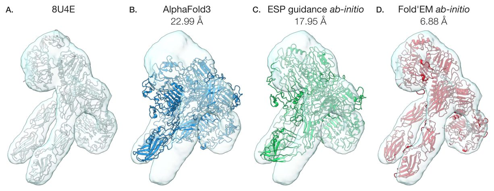
Rasmning to'liq tavsifi
2-rasm: Zarrachalar bilan yo‘naltirish strukturani tiklaydi, ularning rekonstruksiya qilingan ESP bilan yo‘naltirish esa muvaffaqiyatsizlikka uchraydi. SNR 0,005 da 500 ta zarrachadan sintetik 8U4E (3304 qoldiq) bo‘yicha ab initio xulosa. Kulrang sirt — bu taxminiy pozalarda ushbu zarrachalardan rekonstruksiya qilingan konsensus zichligi, raqamlar esa depozit qilingan modelga nisbatan Cα RMSD. (A) Depozit qilingan model. (B) AlphaFold3 yig‘ilish domenlarini noto‘g‘ri joylashtiradi. (C) ESP yo‘nalishi xuddi shu Pairformer holatini xuddi shu zarrachalar, pozalar va optimizator bilan optimallashtiradi, lekin zarrachalar ehtimolligini konsensus zichligiga nisbatan yo‘qotish funksiyasi bilan almashtiradi va joylashuvni tiklamasdan bashoratni yaxshilaydi. (D) Zarrachalar ehtimolligi bilan yo‘naltirilgan Fold’EM uni AlphaFold3 uchun 0,48 ga nisbatan 0,81 TM-ball bilan tiklaydi.

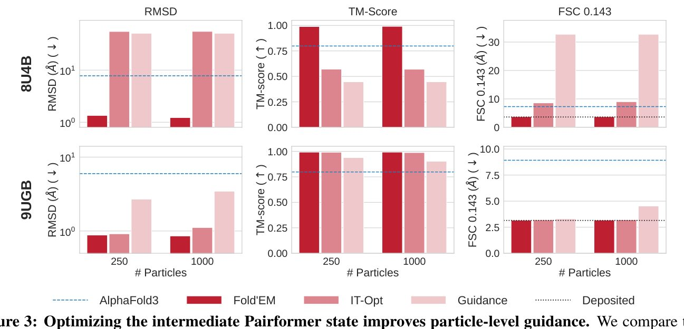
Rasmning to'liq tavsifi
3-rasm: Oraliq Pairformer holatini optimallashtirish zarrachalar darajasidagi yo‘nalishni yaxshilaydi. Biz AlphaFold3 ni xuddi shu zarrachalar ehtimolligi, pozalar va zarrachalar to‘plamlari bilan boshqarishning uchta usulini solishtiramiz: Fold’EM, oraliq Pairformer H holatini optimallashtiradi va yangilanishlarni yakuniy Pairformer bloklari orqali o‘tkazadi; IT-Opt (Maddipatla va boshq., 2026a), izotropik aprior taqsimot ostida terminal Z joylashtirishni (embedding) optimallashtiradi; va teskari diffuziya jarayonining koordinata fazosida yo‘naltirish (Maddipatla va boshq., 2026b). Qatorlar: SNR 0,005 da ma’lum pozalar bilan A2 jadvalidan sintetik 8U4B va 9UGB, 250 va 1000 ta zarrachadan foydalangan holda. Ustunlar: depozit qilingan PDB modeliga nisbatan Cα-RMSD (↓, logarifmik shkala) va TM-ball (↑); uzuq chiziq AlphaFold3 bashoratini belgilaydi. Ikkala nishonda ham Fold’EM ikkala alternativadan sezilarli darajada ustun turadi va depozit qilingan model bilan deyarli atom darajasidagi moslikka erishadi; H ni optimallashtirish orqali induksiya qilingan o‘rganilgan geometriya shu tariqa past SNR da va katta yig‘ilishlarda zarrachalar darajasidagi yo‘nalishni barqaror saqlaydi.

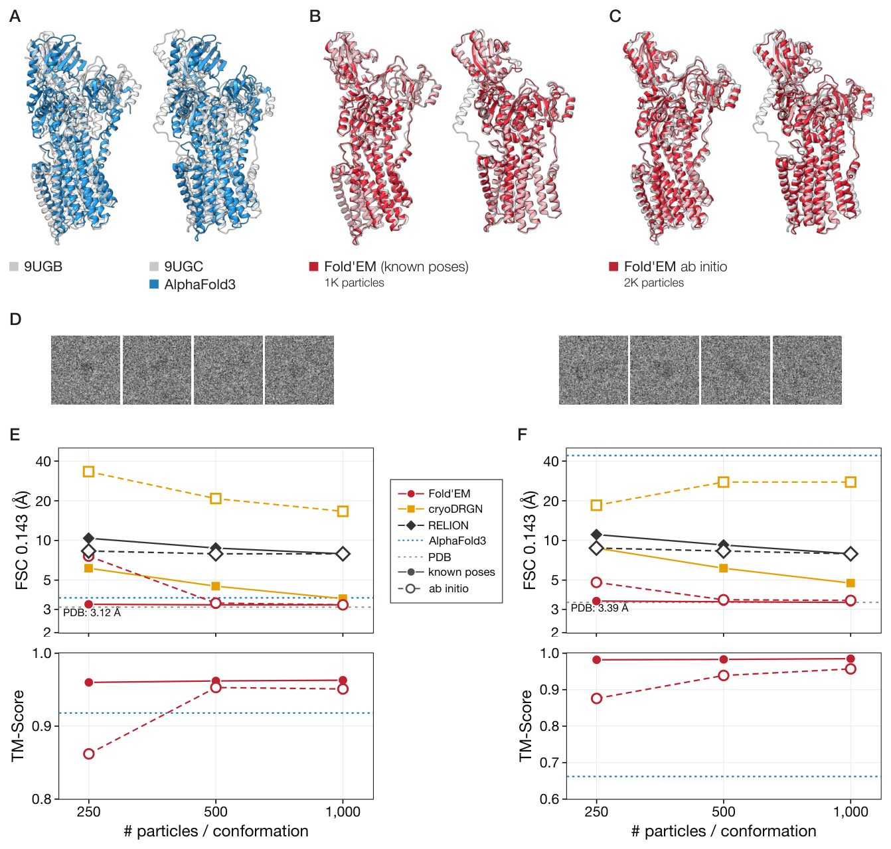
Rasmning to'liq tavsifi
5-rasm: Fold’EM 9UGB/9UGC sintetik aralashmasining ikkala holatini ham ma’lum pozalar bilan har bir holat uchun 250 ta zarrachadan va ab initio 500 ta zarrachadan hal qiladi. Pma1 — xamirturushning plazmatik proton nasosi, P-turdagi ATPaza, uning sitozolik A-, N- va P-domenlari katalitik sikl davomida qayta joylashadi; 9UGB faollashtirilgan (E2P) holat, 9UGC esa avtoingibirlangan holatdir. Zarrachalar Cα RMSD bo‘yicha taxminan 9 Å farq qiladigan ikkita depozit qilingan konformatsiyadan renderlangan va SNR 0,005 da teng nisbatda aralashtirilgan. Har bir panelda 9UGB chapda, 9UGC esa o‘ngda. (A) AlphaFold3 (ko‘k) depozit qilingan modellar (kulrang) ustida hech qaysi holatni tiklamaydi (TM-ball 0,70 va 0,66): transmembran domeni to‘g‘ri bashorat qilingan va xatolik sitozolik domenlar bilan cheklangan, ularning joylashuvi sikl holatiga bog‘liq. (B) Ma’lum pozalar bilan Fold’EM (qizil) 1000 ta zarrachadan iborat aralash stekdan (har bir holat uchun 500 ta) ikkalasini ham hal qiladi. (C) Fold’EM ab initio 2000 ta zarrachadan (har bir holat uchun 1000 ta) ikkalasini ham hal qiladi. (D) Har bir holatning vakillik zarrachalari. (E, F) 9UGB (E) va 9UGC (F) uchun har bir holatdagi zarrachalar soniga qarab FSC ruxsati (yuqorida) va depozit qilingan modelga nisbatan TM-ball (pastda); to‘ldirilgan markerlar ma’lum pozalarni, bo‘sh markerlar ab initio ni bildiradi, uzuq kulrang chiziq depozit qilingan modelning ruxsati, nuqtali ko‘k chiziq esa AlphaFold3 bashoratidir.

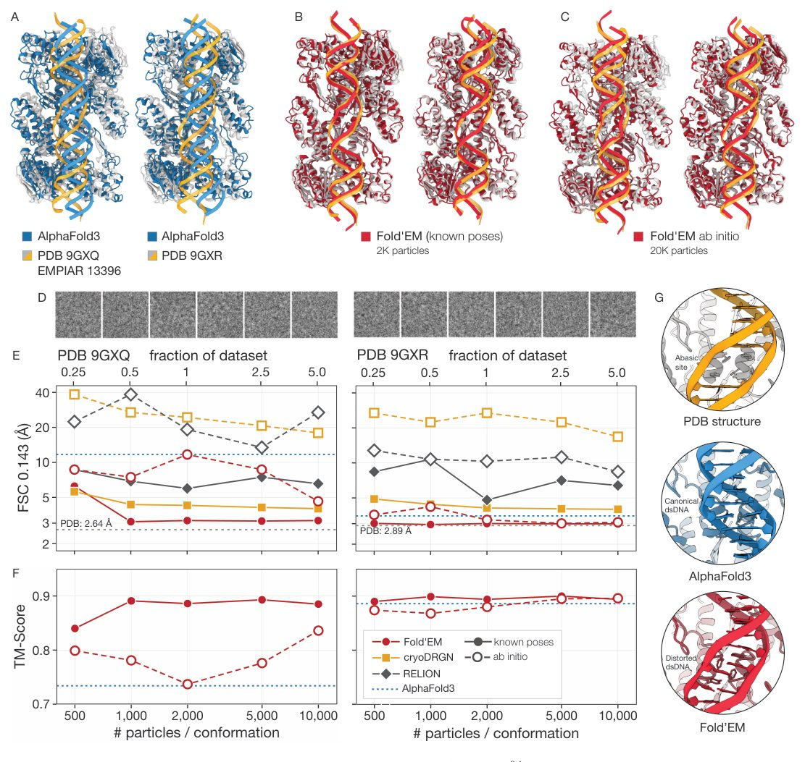
Rasmning to'liq tavsifi
6-rasm: Fold’EM 0,5% ma’lum pozitsiyali va 5% ab initio zarralardan UvrA–DNK konformatsiyalarini aniqlaydi. EMPIAR-13396 tarkibida abazit saytiga ega DNK bilan bog‘langan UvrA ning ikki holati mavjud (PDB 9GXQ/9GXR); shikastlanishni aniqlash Y62/Q65/F66 xanjarini dupleksga kiritishni o‘z ichiga oladi. (A) AlphaFold3 9GXR ni tiklaydi, lekin 9GXQ ni emas (TM-ball 0,734). (B, C) Fold’EM har bir holat uchun 1000 ta ma’lum pozitsiyali va 10 000 ta ab initio zarralardan ikkala holatni ham aniqlaydi (chapda: 9GXQ, o‘ngda: 9GXR). (D) Vakillik zarralari. (E) FSC ning har bir holat uchun zarralar soniga nisbati (to‘ldirilgan: ma’lum pozitsiyalar; ochiq: ab initio). Ma’lum pozitsiyalar bilan Fold’EM har bir holat uchun 1000 ta zarradan 3,1/3,0 Å aniqlikka erishadi; ab initio usulida 9GXR uchun 3,0 Å va 9GXQ uchun 4,6 Å aniqlikka erishadi, RELION va cryoDRGN-AI esa 8 Å dan yuqori qoladi. (F) Deponiyalangan modellarga nisbatan TM-ball. (G) AlphaFold3 to‘liq juftlashgan dupleksni saqlaydi, Fold’EM esa xanjar kiritilishi va buzilgan DNKni tiklaydi, lekin tashqariga burilgan nukleotidni emas, chunki shikastlanish har ikkala modelga yaxlit DNK sifatida taqdim etilgan. Ruxsat (Å; FSC = 0,143).

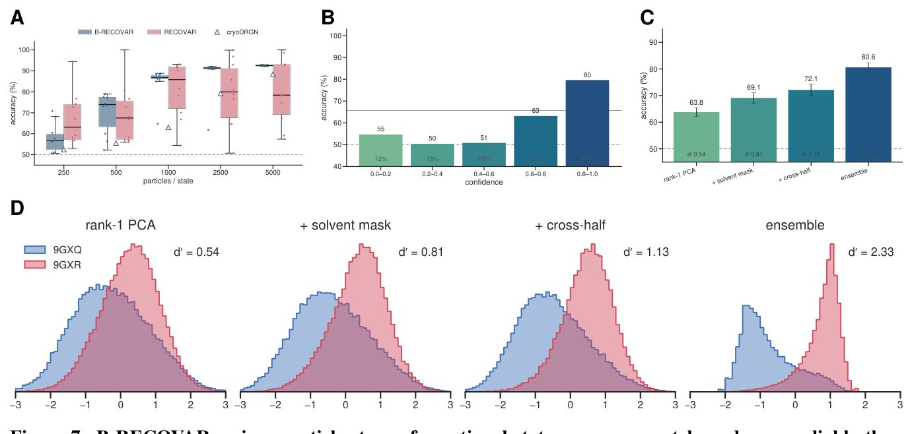
Rasmning to'liq tavsifi
7-rasm: B-RECOVAR zarralarni konformatsion holatlarga RECOVAR va cryoDRGN ga qaraganda kamroq zarrachalar sonida aniqroq va ishonchliroq taqsimlaydi, uning ishonchlilik ko‘rsatkichi esa taqsimotlarni ishonchliligiga qarab tartiblaydi. UvrA oqsil-DNK kompleksi (EMPIAR-13396, 9GXQ va 9GXR) bo‘yicha yorliqsiz sinf tayinlash, deponiyalangan yorliqlarga nisbatan baholangan. (A) Har bir holat uchun zarralar soniga qarab aniqlik, 250 dan 5000 gacha, ya’ni har bir holat uchun deponiyalangan zarralarning 0,13–2,6%. Qutilar B-RECOVAR va RECOVAR uchun umumiy bo‘lgan har bir o‘lcham uchun o‘nta tasodifiy tanlovni jamlaydi; uchburchaklar cryoDRGN ni belgilaydi. RECOVAR baholovchisi bunday namuna o‘lchamlarida yomon ishlaydi va uning aniqligi bir xil o‘lchamdagi tanlovlar orasida tasodifiydan deyarli mukammalgacha o‘zgaradi; B-RECOVAR zarralar soni bo‘yicha undan ortda qoladi, lekin 500 ta zarradan boshlab aniqroq va barqarorroq, cryoDRGN esa butun jarayon davomida B-RECOVAR dan past qoladi. (B) B-RECOVAR ning ishonchlilik ko‘rsatkichi κk bo‘yicha tabaqalashtirilgan aniqligi, ansambl ovoz berishning normallashtirilgan chegarasi (D.4-ilova). Har bir ustundagi foiz – bu qutidagi zarralar ulushi; uzluksiz chiziq barcha zarralar bo‘yicha aniqlik, uzuq chiziq esa tasodifiy aniqlikdir. Aniqlik ishonchlilik bilan birga monoton ortadi, shuning uchun ko‘rsatkich zarralarni yorliq ishonchliligiga qarab tartiblaydi; Fold’EM ushbu tartibdan har bir ansambl a’zosini o‘z zarralarining ishonchli yarmi bilan boshqarish uchun foydalanadi (A26-jadval). (C, D) Har bir holat uchun 1000 ta zarrada baholovchini ablatsiya qilish. Asosiy baholovchi – bu konsensusdan ayirilgan qoldiqlarga bir darajali moslashuv, shovqin tuzatishsiz bir o‘lchovli RECOVAR moslashuvi bo‘lib, u modani erituvchi niqobi bilan cheklash, yorliqlarni o‘zaro tekshirilgan aniqlashtirish va zarralar kichik namunalari, chastota diapazonlari va initsializatsiyalar bo‘yicha replikalarni ansambllash orqali yaxshilanadi. (C) Har bir bosqichning aniqligi, takroriy tanlovlar bo‘yicha xatolik chiziqlari bilan. (D) Har bir bosqichda har bir zarraning sinf bahosi taqsimoti, ularning d′ ajralishi bilan, ya’ni birlashtirilgan standart og‘ish birliklarida ikki o‘rtacha qiymatning farqi. Har bir qadam holatlar o‘rtasidagi ajralishni kengaytiradi va ansambl eng katta yutuqni ta’minlaydi.

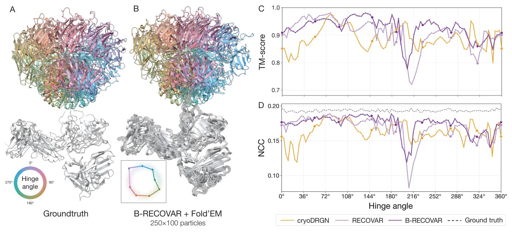
Rasmning to'liq tavsifi
8-rasm: Fold’EM IgG antitanasi kompleksining uzluksiz geterogenligini aniqlaydi. (A) Ansambllar sifatida 100 ta CryoBench IgG-1D sintetik modeli ko‘rsatilgan, ular ilgak burchagi bo‘yicha ranglangan; va (B) B-RECOVAR zarrachalar klassifikatsiyasi bilan Fold’EM tomonidan tiklangan mos tuzilmalar. Kichik rasmda optimallashtirilgan Pairformer holatlarining ikkita asosiy komponenti tasvirlangan, ular B-RECOVAR zarrachalar joylashuvi ustiga qo‘yilgan. (C) TM-ball va (D) Fourier NCC uchta konformatsion koordinata uchun ilgak burchagi funksiyasi sifatida chizilgan.

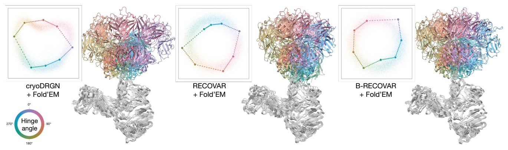
Rasmning to'liq tavsifi
9-rasm: Optimallashtirilgan Pairformer holatlari barcha uchta konformatsion koordinata uchun ilgak burchagi tartibini saqlaydi. Biz uchta zarracha klassifikatorining har biri uchun geometriya va yaratilgan tuzilmalarni ko‘rsatamiz: cryoDRGN, RECOVAR va B-RECOVAR. Har bir panelning chap tomonida: optimallashtirilgan Pairformer holatlarining ikkita asosiy komponenti, sakkizta langar katta nuqtalar sifatida va interpolyatsiya qilingan holatlar kichik nuqtalar sifatida, bir xil tekislikka o‘tkazilgan tegishli usulning har bir zarracha koordinatalari ustiga qo‘yilgan; barchasi ranglar g‘ildiragida ko‘rsatilganidek, ular ifodalovchi holatning ilgak burchagi bo‘yicha ranglangan. Har bir panelning o‘ng tomonida: interpolyatsiya qilingan holatlardan dekodlangan 10 ta tuzilmaning kichik to‘plami, antitananing qat’iy tanasi ustiga qo‘yilgan va ilgak burchagi bo‘yicha ranglangan (yuqorida), va Fab ning ilgak atrofida harakatlanishini ko‘rsatish uchun oq rangda (pastda). Barcha uchta holatda ilgak burchagi bo‘yicha tartiblangan langarlar tasvirda oddiy yopiq halqani hosil qiladi va dekodlangan tuzilmalar Fab ning to‘liq aylanishini kuzatib boradi.

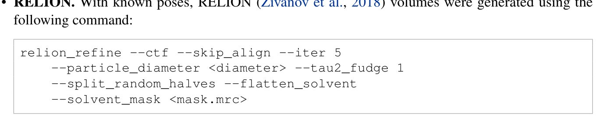
Jadvallar
Jadval 3.

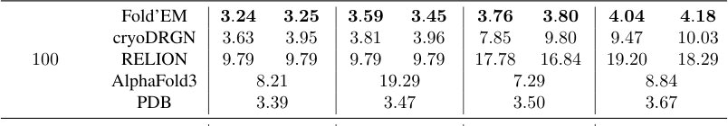

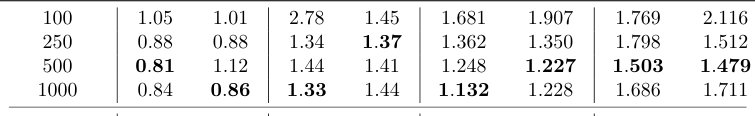

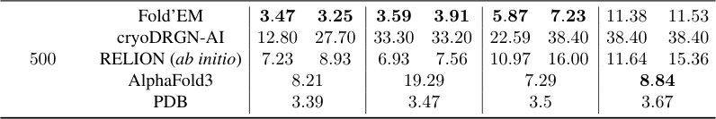

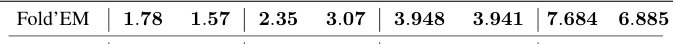

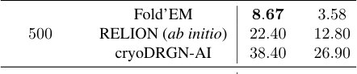

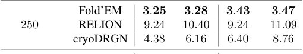

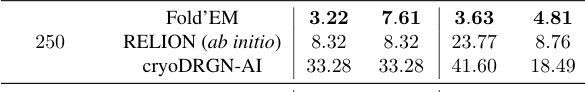

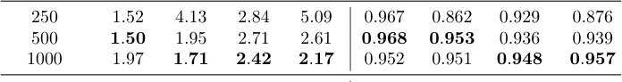
Tadqiqot sxemasi
Preprint hali taqriz qilinmagan. Xulosalar dastlabki.
Manba
| Manba | Kategoriya | Preprint litsenziyasi |
|---|---|---|
| arXiv | biophysics | arxiv |
Manbalar
| Manba | Havola |
|---|---|
| Страница препринта | arxiv.org |
| Полный текст (PDF) | arxiv.org |
| DOI | doi.org |
| Метаданные Crossref | api.crossref.org |
| Europe PMC | europepmc.org |
| Иллюстрация | commons.wikimedia.org |